LECTURE 09 · CHAPTER 6-1
卤代烷、亲核取代与 SN2 反应
Alkyl halides: nomenclature, structure, and the SN2 reaction
1. 这一讲接在哪里
到目前为止，这门课讲的都是“分子是什么”：烷烃的构象、自由基取代的动力学、手性与立体化学。从这一讲开始换成“分子怎么反应”——反应机理。
选中的切入点是亲核体进攻卤代烷（alkyl halide）。这个选择并非随意：卤代烷里的碳–卤键是极性键，碳上带部分正电荷，天生是亲电体；而卤素离子又是一个稳定的离去基团。一个“好攻的目标”加一个“好走的基团”，正好构成机理教学的最小系统。
本讲只讲透一个反应——SN2。后面几讲的 SN1、E1、E2 都以它为参照物：哪里相同、哪里相反、什么条件下谁占优。
第 6 章的第一部分（Chapter 6-1）只覆盖卤代烷的命名、结构、物理性质，以及 SN2 的机理与影响因素。Chapter 6-2 会讲 SN1、消除反应、以及卤代烷的制备与用途。第 17 节列出了本讲没有展开、留给下一讲的内容。
2. 卤代烷：三类含卤化合物
“卤代烃 / 卤烃”是烃分子中的氢原子被卤素取代后生成的化合物。课件把它分成并列的三类，区别只在于卤素连在什么杂化的碳上：
- 烷基卤（alkyl halide，烷基卤）：卤素连在 sp3 杂化的烷基碳上。
- 乙烯基卤（vinyl halide）：卤素连在 sp2 杂化的双键碳上。
- 芳基卤（aryl halide，芳基卤）：卤素连在 sp2 杂化的芳环碳上。
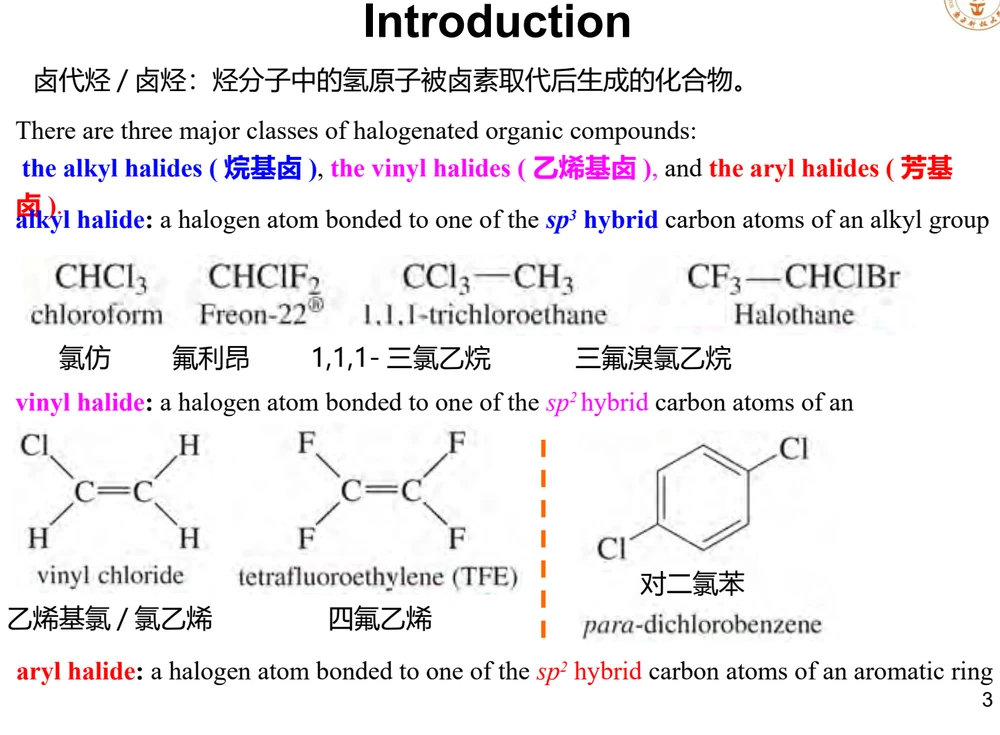
这个区分的重要性在后面才显现：本讲讲的 SN2 只适用于烷基卤。乙烯基卤与芳基卤的卤素被双键或芳环的 π 电子体系“锁”住，既不能发生 SN2 的背面进攻，也不能像烷基卤那样按 SN1 电离。课件在复习清单与作业中提到的都是烷基卤，这一点在解题时要先确认。
烷基卤的实例
- CHCl3 氯仿 · chloroform
- CHClF2 氟利昂 · Freon-22
- CCl3–CH3 1,1,1-三氯乙烷
- CF3–CHClBr 三氟溴氯乙烷（Halothane，麻醉剂）
乙烯基卤与芳基卤的实例
- CH2=CHCl 氯乙烯 · vinyl chloride（聚合单体）
- CF2=CF2 四氟乙烯 · TFE
- 对二氯苯 · para-dichlorobenzene
“卤代烃”是上位概念，包含烷基卤、乙烯基卤、芳基卤；“卤代烷”（haloalkane）只指烷基卤。课件的中文标题用“卤代烷”，正文却时不时写成“卤代烃”，两者在这份 PPT 里是同义的。本笔记统一用“卤代烷”指代烷基卤，用“含卤化合物”指三类全体。
3. 按连卤碳的级数分类
课件给出的分类标准很明确：按连有卤素原子的碳原子的本质分类。这里的“本质”指的是这个碳上还连有几个碳——也就是我们在烷烃那一讲用过的伯、仲、叔概念。
| 类别 | 结构通式 | 英文名 | 实例 |
|---|---|---|---|
| 甲基卤 | CH3–X | methyl halide | CH3–Br 甲基溴 · methyl bromide |
| 伯卤（一级） | R–CH2–X | primary (1°) halide | CH3CH2CH2–F 正丙基氟 · n-propyl fluoride |
| 仲卤（二级） | R2CH–X | secondary (2°) halide | 仲丁基碘 · sec-butyl iodide |
| 叔卤（三级） | R3C–X | tertiary (3°) halide | (CH3)3C–Cl 叔丁基氯 · tert-butyl chloride |
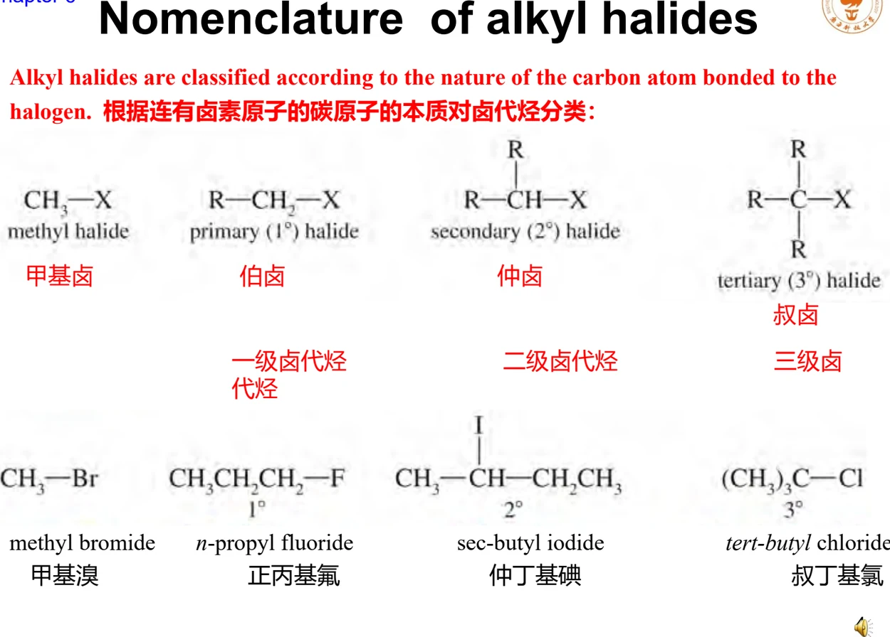
把级数与反应性联系起来是本章的主线。课件第 27 页给出的底物反应性顺序是 CH3X > 1° > 2°，括号里补了一句：3° 卤代烷根本不能按 SN2 机理反应。原因见第 12 节——三点甲基把背面进攻的通道完全堵死了。
按卤素数目分类
课件给的第二个分类维度是分子中卤素的个数：一卤代烷（一元卤烷）、二卤代烷（二元卤烷）、三卤代烷（三元卤烷），其余依此类推。二卤代烷里又有两个专门的名称：
- 偕二卤代烷（geminal dihalide）：两个卤原子连在同一个碳上，如 geminal dibromide。
- 邻二卤代烷（vicinal dihalide，又叫连二卤代烷）：两个卤原子连在相邻的两个碳上，如 vicinal dichloride。
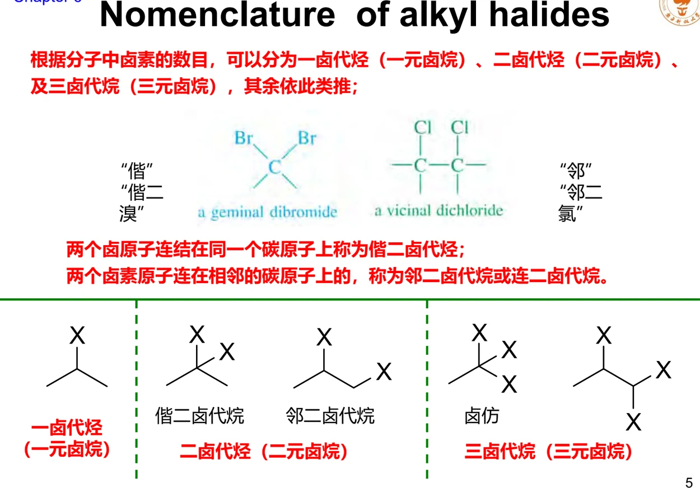
偕二卤代烷与邻二卤代烷是后面合成章节的常用原料：邻二卤代烷可以脱卤生成炔烃，偕二卤代烷可以水解成醛或酮。它们的中文名在中文教材里有时写成“同碳二卤代物”和“邻碳二卤代物”，指同一件事。
4. IUPAC 命名：把卤素当取代基
卤代烷有两套命名法，课件写得清楚：
- 系统命名（IUPAC）：halloalkane，中文叫“卤烷烃 / 卤代烷”。做法是把卤代烷视为烷烃，卤素只是一个 halo- 取代基。氟是 fluoro-、氯是 chloro-、溴是 bromo-、碘是 iodo-。
- 普通命名（俗名）：alkyl halide，中文叫“烷基卤”。做法是“烷基名 + 卤化物名”。俗名只对简单卤代烷好用。
这里有一个容易忽略的事实：卤代烷在 IUPAC 体系里从来没有自己的后缀。它就是烷烃加取代基，所以碳–卤键永远进不了“主官能团”的位置。
俗名的适用边界
俗名由“烷基 + 卤化物”拼成，如 ethyl fluoride（乙基氟）、n-butyl chloride（正丁基氯）、isopropyl bromide（异丙基溴）。环状也一样：环己基上的卤素写成 cyclohexyl fluoride / chloride / bromide / iodide（环己基氟、环己基氯、环己基溴、环己基碘）。
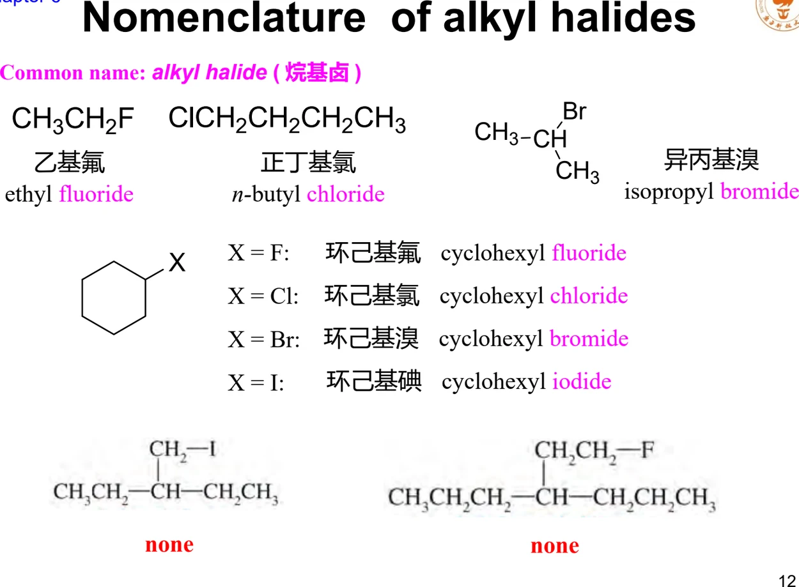
四段结构：Prefix–Locant–Parent–Suffix
课件给出一个通用骨架，四段各回答一个问题：
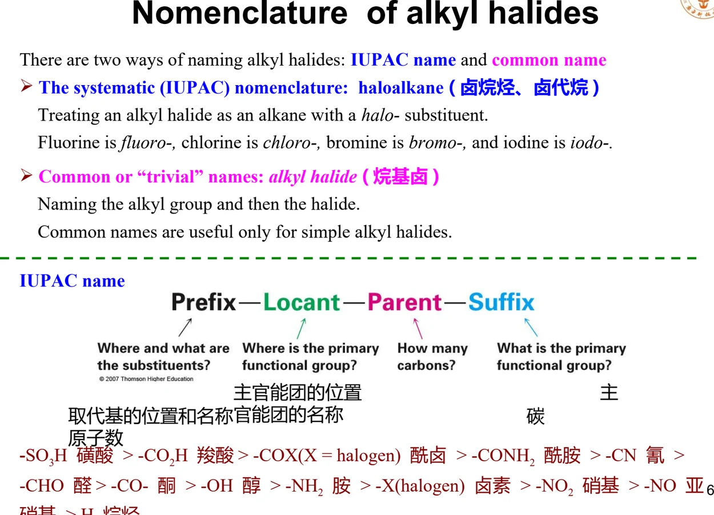
Naming template
取代基位置 + 取代基名 + 母体名 + 后缀
以 2-溴丙烷为例：2（位置）-bromo（取代基）propane（母体）。因为卤素不是主官能团，整名没有独立的 Suffix。
把卤代烷与醇对比一下差别就清楚了：2-丙醇写作 propan-2-ol，后缀 -ol 标识主官能团；2-溴丙烷只能写作 2-bromopropane，bromo 永远在 Prefix 的位置。
卤素在官能团优先次序中的位置
因为卤素只能作前缀，判断“谁是主官能团”时需要一条优先次序表。课件给出（按优先级从高到低，节选）：
Functional-group priority
-SO3H 磺酸 > -CO2H 羧酸 > -COX（X = 卤素）酰卤 > -CONH2 酰胺 > -CN 氰 > -CHO 醛 > -CO- 酮 > -OH 醇 > -NH2 胺 > -X（卤素） > -NO2 硝基 > -NO 亚硝基 > -H 烷烃
卤素的位置相当靠后，只排在硝基、亚硝基和氢之前。也就是说，只要分子里还有羟基、氨基、羰基，卤素就一定作前缀。
课件的优先次序表在页脚处被切掉，最后可见的是 -X（卤素）。上面补出的“-NO2 > -NO > -H”依通用次序补齐，使用前建议核对课件原件或 Wade 附录。这一点也记在第 23 节的勘误里。
5. 中文名与英文名的排序规则相反
取代基多于一个时，IUPAC 要求按一定顺序列举。课件把这条规则与 CIP 顺序规则挂在一起讲，值得单独拿出来对比：
中文命名：按 CIP 顺序，从小到大
- 课件原文：“中文名称中取代基从小到大排列”。
- 单原子取代基按原子序数大小排列，原子序数大的为“大”取代基，排在后面。
- 课件给的次序：I > Br > Cl > S > P > Si > F > O > N > 13C > 12C > B > Li > 3H > 2H > 1H。
英文命名：按字母序
- 课件原文：“Substituents are alphabetized.”
- 按取代基英文名的首字母排序，与原子序数无关。
- 同位素前缀与立体化学前缀（iso、neo、cis、trans 等）参与排序。
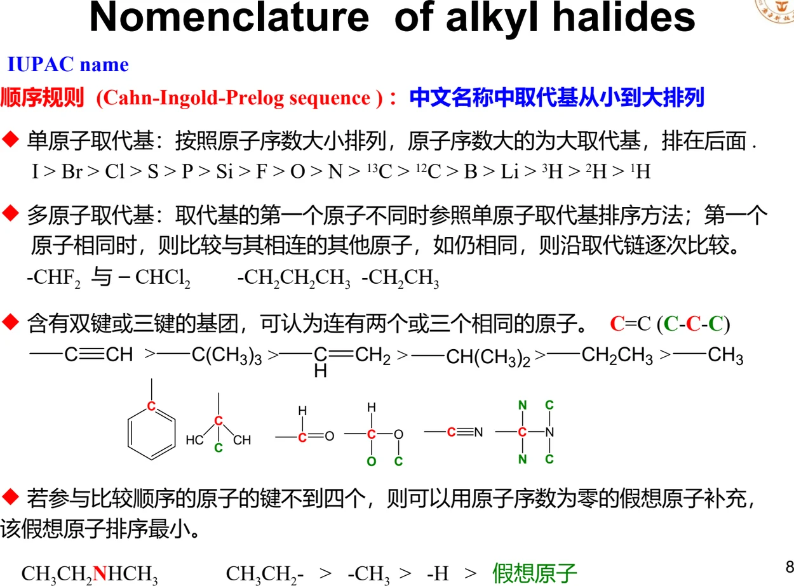
课件把 CIP 规则拆成四条：
- 单原子取代基：按原子序数大小排列，原子序数大的为大取代基，排在后面。
- 多原子取代基：先比第一个原子，与单原子规则相同；第一个原子相同时，比较与它相连的其他原子；仍相同则沿取代链逐次比较。例如 -CHF2 与 -CHCl2，第一个原子都是 C，再比后面的 F 与 Cl，所以 -CHCl2 更大。
- 含双键或三键的基团：把重键“展开”，认为连有两个或三个相同的原子。课件写成 C=C（C–C–C）。于是课件给出的次序是：—C≡CH > —C(CH3)3 > —CH=CH2 > —CH(CH3)2 > —CH2CH3 > —CH3。
- 键数不足四个时：用原子序数为零的假想原子补充，假想原子排序最小。课件给的例子是 CH3CH2NHCH3 中氮上的比较：CH3CH2- > -CH3 > -H > 假想原子。
英文排序的三个细节
课件在英文命名这一页给了三条容易丢分的细则：
- 取代基按字母顺序排列。
- iso 参与排序，但作为字母 i 的一部分。例如 isobutyl 按 i 排序，而不是按 b。课件原文强调 “iso is used as part of the alkyl group name”。
- 带连字符的前缀不参与排序。n-butyl、t-butyl、sec-butyl 都按 b 排序（按 butyl 排），前面的 n-、t-、sec- 直接忽略。
- 同理，di-、tri-、tetra- 等数量前缀也不参与排序。
中文名看的是原子序数（谁的元素更“重”），英文名看的是字母表（谁的单词更靠前）。两者经常给出相反的顺序。例如甲基与氯：英文里 chloro-（c）排在 methyl-（m）前面，中文里氯的原子序数大于碳，所以氯是“大”取代基、排在后面——恰好相反。
6. C–X 键的结构：极性从哪来
卤代烷能发生亲核取代的全部结构基础，就在碳–卤键的极性上。课件用电负性来解释：
- 电负性高的元素对成键电子的吸引力更强。
- 在两个不同原子的键中，电负性高的那一端是偶极的负端。
- 从左到右横穿周期表，电负性增大。
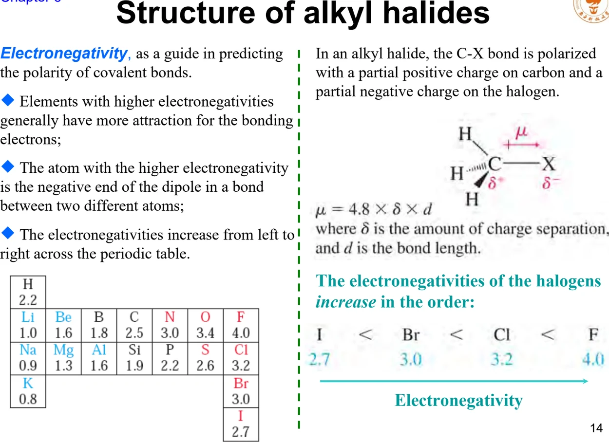
课件把卤素的电负性顺序写在图下：I < Br < Cl < F（2.7 < 3.0 < 3.2 < 4.0）。这个顺序是后面所有性质的源头之一。
键长与键能：两个方向相反的趋势
课件给出碳–卤键长随卤素增大而增大：C–F 1.38 Å < C–Cl 1.78 Å < C–Br 1.94 Å < C–I 2.14 Å。键长的变化方向与键能相反：键越长，键越弱，越容易断裂。这一点直接决定了卤代烷的反应活性顺序——碘代烷最活泼，氟代烷最不活泼。
课件表格里甲卤的偶极矩是 C–I 1.29 D < C–Br 1.48 D < C–F 1.51 D < C–Cl 1.56 D——氯代物的偶极矩最大，而不是氟代物。这是一处容易看错的地方，课件正文没有解释。原因在于分子偶极矩是矢量和：卤素上孤对电子对偶极矩也有贡献，它与碳–卤键偶极的夹角关系使得 C–Cl 的合偶极矩略大于 C–F。也就是说，键的极性顺序（电负性差）与分子的偶极矩顺序并不一一对应。做题时若题目问“键的极性”，答 F > Cl > Br > I；若题目问“分子偶极矩”，按上表答。这一条也记在第 23 节的勘误里。
7. 物理性质：沸点与色散力
卤代烷的沸点由两类分子间作用力决定，课件明确指出它们的相对重要性：
- 色散力（London force，伦敦色散力）：最强的分子间作用力。色散力是表面之间的吸引，分子表面积越大，色散吸引越强，沸点越高。
- 偶极–偶极作用：来自极性 C–X 键，对沸点也有影响，但程度较小。
分子量越大，沸点通常越高，原因有两条：分子更重（运动更慢）；表面积更大。课件用乙基卤的四个球棍模型把这一趋势画得很直观：
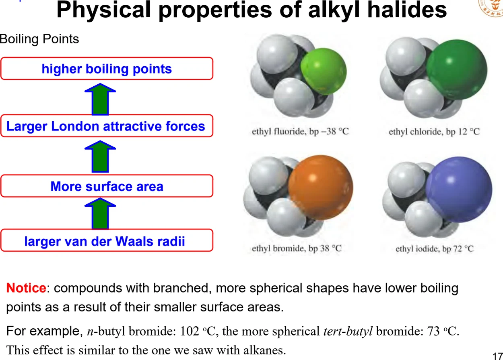
课件给了两处具体数据，值得记：
卤代烷 vs 相应烷烃
- 烷基氟与相应烷烃的表面积几乎相同，色散力相近。
- 但烷基氟的偶极矩更大，所以总吸引力略大、沸点略高。
- 数据：正丁烷沸点 0 ℃；正丁基氟沸点 33 ℃。
支链化降低沸点
- 支链多、形状更接近球形的分子，表面积更小，色散力更弱，沸点更低。
- 数据：正丁基溴 102 ℃；更接近球形的叔丁基溴只有 73 ℃。
- 课件注明这与烷烃那一讲的规律是同一个效应。
密度、溶解性与颜色
课件在“Densities: conclusions”一页给出四条规律，并在下方补了三条常识：
- 一元卤代烷的相对密度大于同数碳原子的烷烃。
- 一氯代烷相对密度 < 1（比水轻）；一溴代烷、一碘代烷及多氯代烷相对密度 > 1（比水重）。
- 同一烃基的卤代烷，氟烷密度最小、碘烷密度最大。
- 卤素相同时，相对密度随烃基相对分子质量增加而减小。
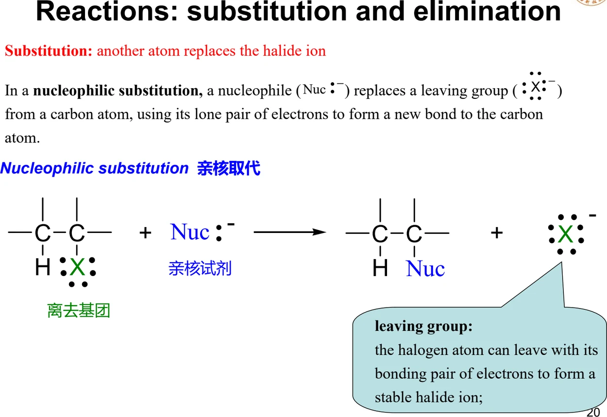
三条常识：卤代烷不溶于水，溶于醇、醚、烃等有机溶剂；纯净的一元卤代烷都是无色的；卤代烷在铜丝上燃烧产生绿色火焰，可用来鉴定卤素。
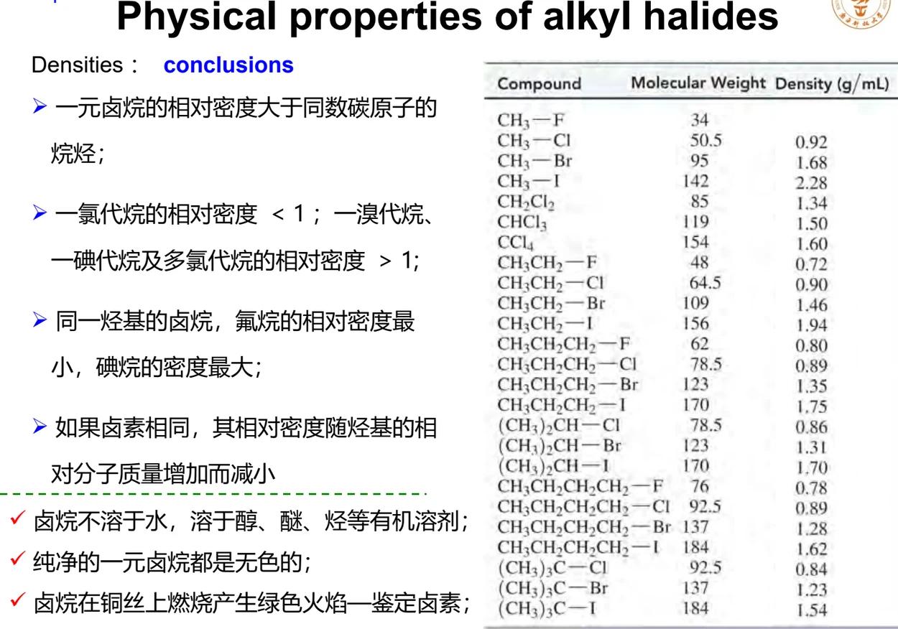
“支链化降低沸点”在烷烃那一讲（第 4 课）出现过一次。那里的解释是支链减少接触面积；这里的解释完全一样。两处规律呼应，不需要分别记忆——记住“沸点看表面积”这一条就够。
8. 取代与消除：两类反应的竞争
卤代烷的化学反应有两大走向，课件用一页把定义对齐：
- 取代（substitution）：另一个原子或基团替换掉卤素离子。
- 消除（elimination）：卤素离子与另一个原子或离子（常常是 H+）一起离开，生成不饱和键。
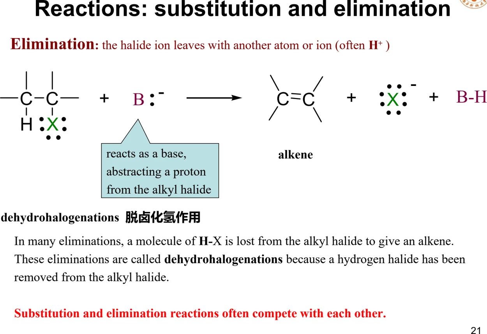
消除反应有一个更具体的名称：脱卤化氢（dehydrohalogenation，脱卤化氢作用）。因为在这个过程里，一分子 H–X 从卤代烷上被脱掉，得到烯烃。
课件用红字写明：Substitution and elimination reactions often compete with each other.（取代与消除反应经常互相竞争。）同一个卤代烷、同一个亲核试剂，条件稍变就可能从取代转为消除——这正是后面几讲要处理的核心问题。本讲只把取代讲透；消除的机理（E1、E2）留到 Chapter 6-2。
取代反应的通式
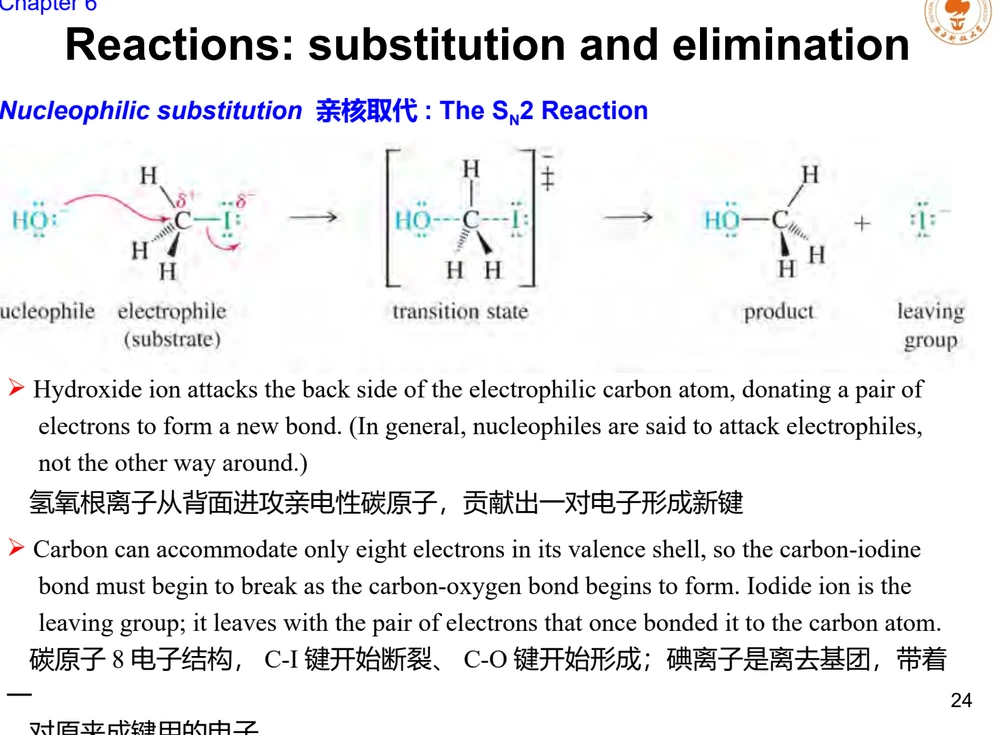
课件的表述值得逐句读：
- 氢氧根离子是强亲核试剂，因为氧上有未共享电子对并带负电荷。
- 碘甲烷是底物（substrate），即被试剂进攻的化合物。它的碳是亲电性的，因为连在电负性的碘上；卤素把电子密度从碳上拉走，使碳带部分正电荷。
9. SN2 机理：一步协同
课件的标题就是定义：The SN2 reaction takes place in a single (concerted) step. 一个强亲核试剂进攻亲电的碳，把离去基团“挤”出去。
名字里的 “2” 指的是两个物种同时出现在过渡态中（后文从动力学角度再确认一次）。课件把它称为协同反应（concerted reaction）：断键和成键同步进行，中间结构是过渡态而非中间体。
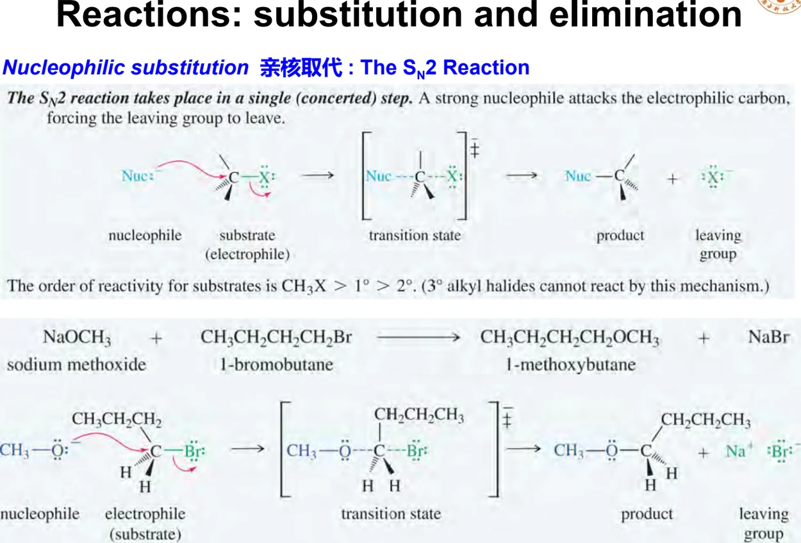
课件在这一页给出的底物反应性顺序是本节的关键结论：
Substrate reactivity for SN2
CH3X > 1° > 2°（3° 烷基卤不能按此机理反应）
顺序的物理原因在位阻：连在反应中心碳上的基团越多，亲核试剂从背面接近的通道越窄。
能量上的刻画
课件画出反应能量图，并把过渡态的性质讲清楚：
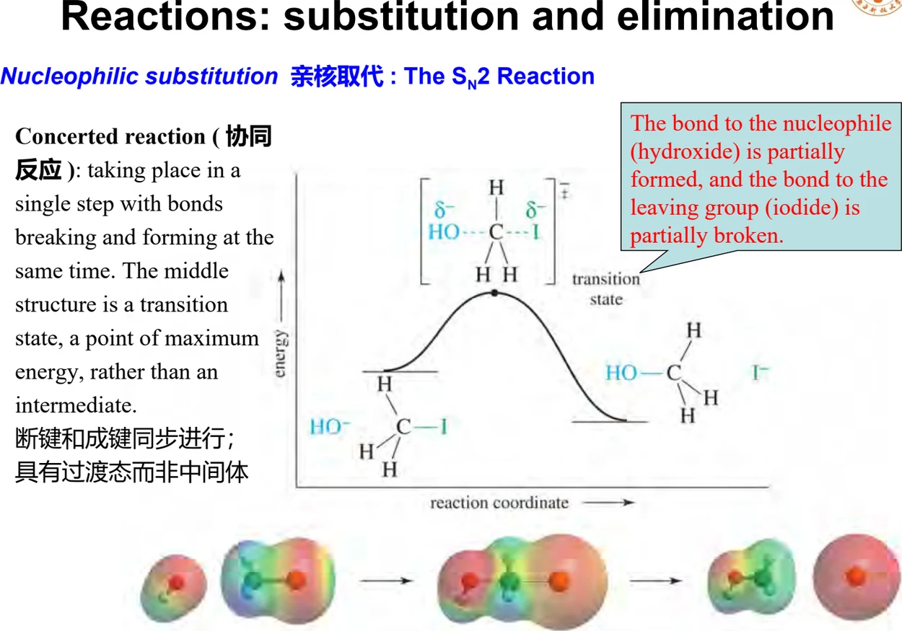
把这张图与第 6 课的反应能量图对比，差别一目了然：
SN2：一个峰
- 反应物 → 过渡态 → 产物。
- 峰顶是能量的极大值，沿反应坐标只有一个极值点。
- 不存在能停留的中间体。
经碳正离子的反应：两个峰一个谷
- 反应物 → 过渡态 → 中间体 → 过渡态 → 产物。
- 谷底是碳正离子，是真实存在的物种。
- 这正是 SN1 的图景，下一讲展开。
过渡态是能量最高点，寿命只有一个键振动的时间量级，无法被分离、无法被捕获；中间体坐在能量谷里，有一定的寿命，可以被光谱观测，也可以被别的试剂捕获。把两者混为一谈，后面判断速率方程、判断立体化学结果时就会推错。课件的原文是 “The middle structure is a transition state, a point of maximum energy, rather than an intermediate.”
背面进攻与构型翻转
课件用箭头画出了进攻的方向：亲核试剂从背面（即离去基团的正对面）沿 C–X 键的延长线接近。这一步不是可有可无的细节——它决定了 SN2 的立体化学结果：构型翻转（类似雨伞被风吹翻）。
亲核试剂从离去基团背面沿C–X键方向进攻，经五配位特征的过渡态形成产物，反应中心发生几何构型翻转。若取代前后CIP优先次序改变，R/S标签不一定反转；更换基团后的底物和产物通常不是同一组成的对映体。
10. 动力学证据：为什么说它是二级
机理不是猜出来的，要有实验支持。课件明确指出：这个一步机理得到了动力学信息的支持。
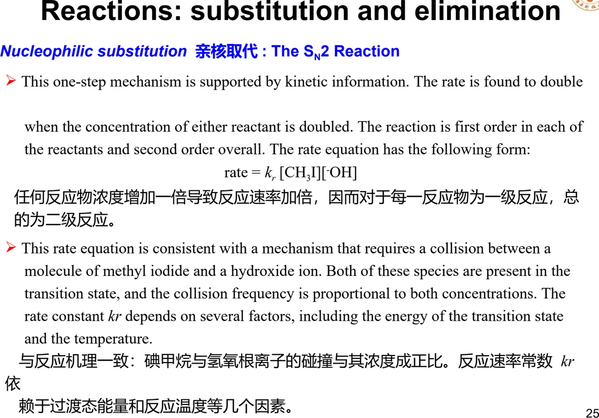
- 实验事实：把任一反应物的浓度加倍，反应速率就加倍。也就是说，反应对每一个反应物都是一级，总的为二级。
- 速率方程：rate = kr[CH3I][−OH]。
- 与机理一致：这个方程要求碘甲烷分子与氢氧根离子发生碰撞。两个物种都出现在过渡态中，碰撞频率与两者的浓度都成正比。
- 速率常数的含义：kr 取决于过渡态的能量和温度——回到第 6 课的 Arrhenius 图景。
strictly 地说，动力学只能排除机理，不能证明机理。二级动力学与“一步协同”相符，同时也与任何“两个分子先碰在一起、再发生速率决定步骤”的机理相符。之所以确认是协同一步，还依赖立体化学证据（构型翻转意味着没有平面碳正离子中间体）与同位素效应等其他实验。课件在这一页只讲了动力学这一条线索。
11. 速率计算：两种解法
课件用两页（第 28、29 页）处理同一道题，给出两种解法。题目原文是：
Under certain conditions, the reaction of 0.5 M 1-bromobutane with 1.0 M sodium methoxide forms 1-methoxybutane at a rate of 0.05 mol/L per second. What would be the rate if 0.1 M 1-bromobutane and 2.0 M NaOCH3 were used?
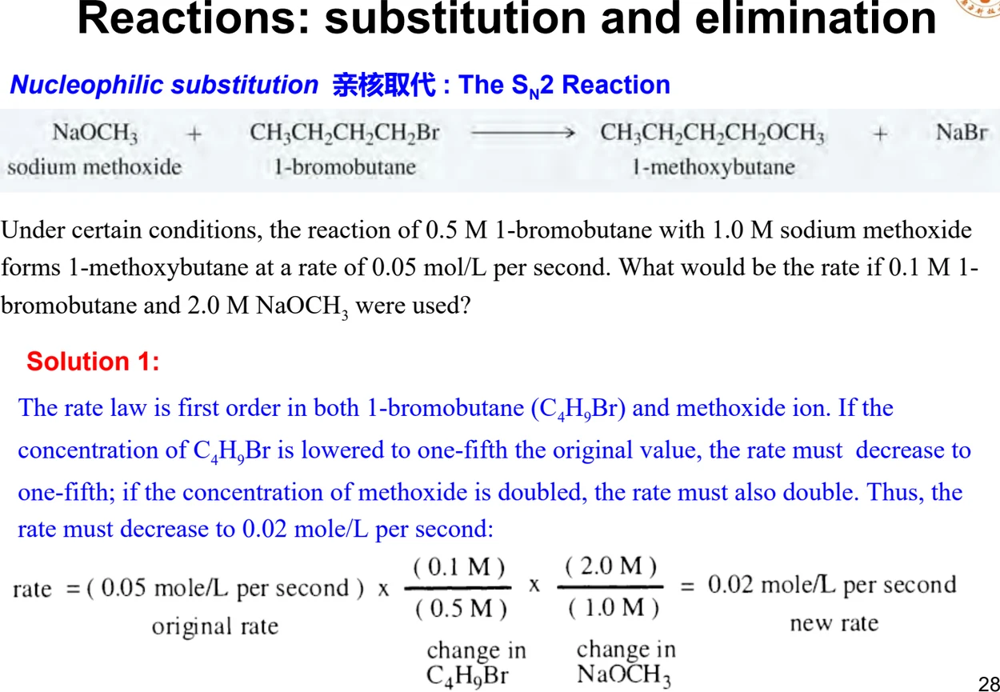
解法一：按倍数缩放
因为速率对两个反应物都是一级，各反应物浓度的变化倍数可以直接相乘：
- 1-溴丁烷的浓度从 0.5 M 降到 0.1 M，变为原来的 1/5，所以速率也要降到 1/5。
- 甲醇钠的浓度从 1.0 M 升到 2.0 M，变为原来的 2 倍，所以速率也要乘 2。
- 综合：新速率 = 0.05 mol/L/s × (0.1/0.5) × (2.0/1.0) = 0.02 mol/L per second。
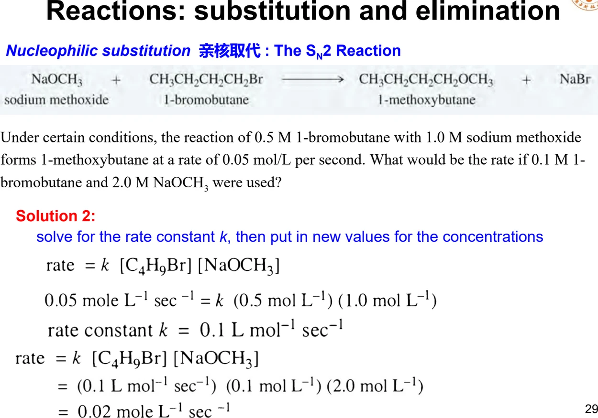
解法二：先求速率常数
- 由 rate = k [C4H9Br][NaOCH3] 反解 k：
0.05 mol·L−1·s−1 = k × (0.5 mol·L−1) × (1.0 mol·L−1)，得 k = 0.1 L·mol−1·s−1。 - 用同一 k 代入新浓度：
rate = (0.1 L·mol−1·s−1) × (0.1 mol·L−1) × (2.0 mol·L−1) = 0.02 mol·L−1·s−1。
题目只给“某浓度的速率”时，解法一最快，不需要动速率常数；题目追问 k 的数值、或者同时改变温度（此时 k 也变）时，必须用解法二。注意解法二里 k 的单位是 L·mol−1·s−1——二级反应的速率常数单位一定比一级反应多一个“每浓度”，这本身就是一个校验点。
12. 亲核取代的实例
课件用一页集中列出六个 SN2 实例，只换亲核试剂，底物大多是伯卤代烷：
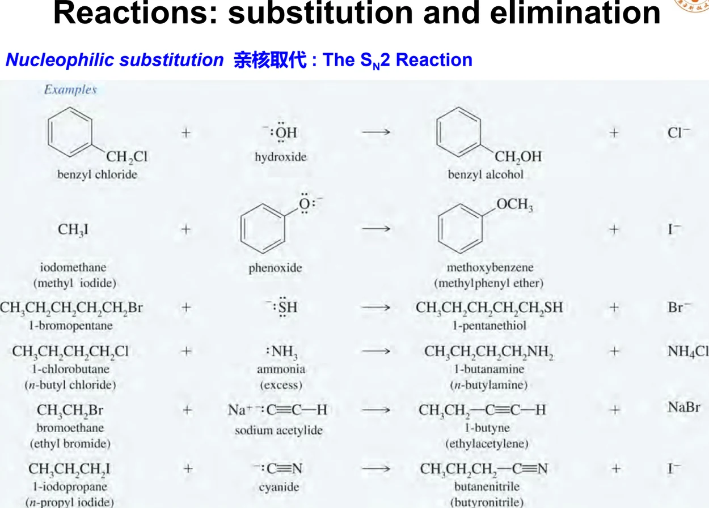
| 底物 | 亲核试剂 | 产物 | 得到的官能团 |
|---|---|---|---|
| 苄基氯 benzyl chloride | −OH 氢氧根 | 苄醇 benzyl alcohol | 醇（1°） |
| 碘甲烷 CH3I | 酚氧负离子 phenoxide | 苯甲醚 methoxybenzene | 醚（芳基烷基醚） |
| 1-溴戊烷 | −SH 硫氢根 | 1-戊硫醇 | 硫醇 |
| 1-氯丁烷 | NH3（过量） | 1-丁胺 n-butylamine | 胺（1°） |
| 溴乙烷 | Na+−C≡CH 乙炔钠 | 1-丁炔 | 端炔 |
| 1-碘丙烷 | −C≡N 氰根 | 丁腈 butanenitrile | 腈 |
这六个例子值得当作“官能团互换表”来记：SN2 是把卤素换成 O、S、N、C 各类基团的最通用手段。后面合成章节里反复用到的“卤代烷 + 亲核试剂”，说的就是这一页。
NH3 进攻卤代烷得到伯胺，但伯胺本身也是亲核试剂，会继续反应得到仲胺、叔胺。课件在例子中直接标注了 “(excess)”——用大大过量的氨把平衡推向伯胺。这一点在做合成题时不能漏。
13. 亲核取代的用途：卤素交换
课件用一整页讲 SN2 的一个特殊用途：卤素交换（halogen exchange）。核心想法是：碘代烷和氟代烷很难直接制备，但可以通过 SN2 从容易得到的氯代烷或溴代烷换过来。
课件的两行通式是：
Halogen exchange
R–X + I− → R–I + X−（制备碘代烷）
R–X + KF ——18-crown-6 / CH3CN——> R–F + KX（制备氟代烷）
碘离子本身就是强亲核试剂，交换直接进行；氟离子是弱亲核试剂，需要 18-冠-6 把 K+ 包起来、把 F−“释放”出来（见第 16 节）。
课件给的实例把这两条路线都用上了：
- CH2=CH–CH2Cl + NaI → CH2=CH–CH2I + NaCl（烯丙基氯换碘）
- CH3CH2Cl + KF，18-crown-6 / CH3CN → CH3CH2F + KCl（氯乙烷换氟）
课件还给了另外三个换官能团的例子，说明 SN2 不止能换卤素：溴乙烷加 NaI 得碘乙烷、1-氯丁烷加 NaSH 得 1-丁硫醇、1-溴戊烷加 NaOCH3 得 1-甲氧基戊烷。
14. 碱性与亲核性不是一回事
这是本章概念上最重要的一节。课件把两个反应并列画出来，只看进攻的对象是什么：
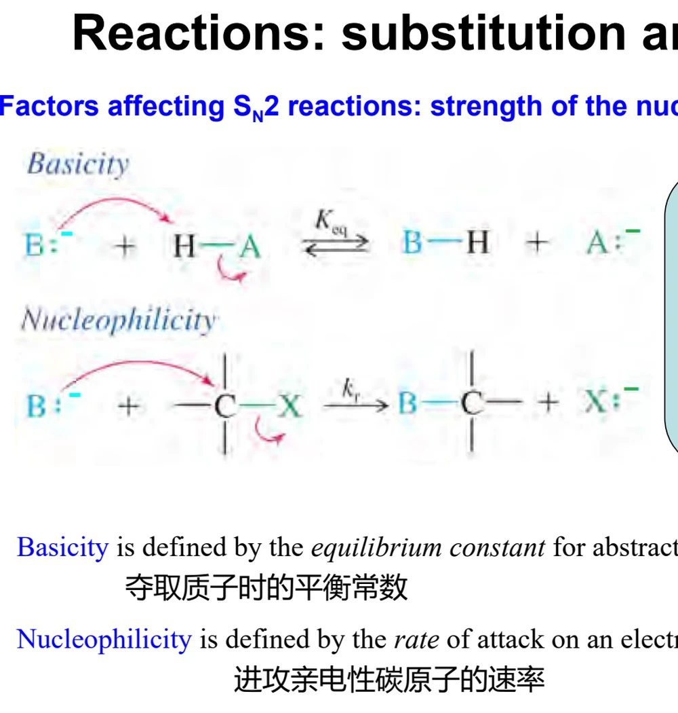
碱性（basicity）
- 定义：夺取质子时的平衡常数。
- 衡量的是热力学：反应进行得完不完全。
- 是一个平衡量，与浓度、时间无关。
亲核性（nucleophilicity）
- 定义：进攻亲电性碳原子的速率。
- 衡量的是动力学：反应进行得快不快。
- 是一个速率量，与过渡态能量直接相关。
课件用一句原文把两者的关系讲透：“The nucleophile (or base) forms a new bond: if the new bond is to a proton, it has reacted as a base; if the new bond is to carbon, it has reacted as a nucleophile.”（亲核试剂/碱都是形成一根新键，新键连到质子上就是碱，连到碳上就是亲核试剂。）
课件在这一页写：“Most (but not all) good nucleophiles are also strong bases, and vice versa.”（大多数好的亲核试剂也是强碱，反之亦然。）紧接着给出两条同周期、同族的对应关系：
· 同周期、同一原子时，共轭碱越强，亲核性越强：CH3O− > HO− > CH3O…（课件以甲醇/甲氧基为例，甲氧基的反应速率比甲醇快约 106 倍）。
· 同族时，碱性与亲核性的强弱顺序一致：R3C− > R2N− > RO− > F−。
但这条规律有例外，第 15、16 节的两类因素就是例外产生的地方。
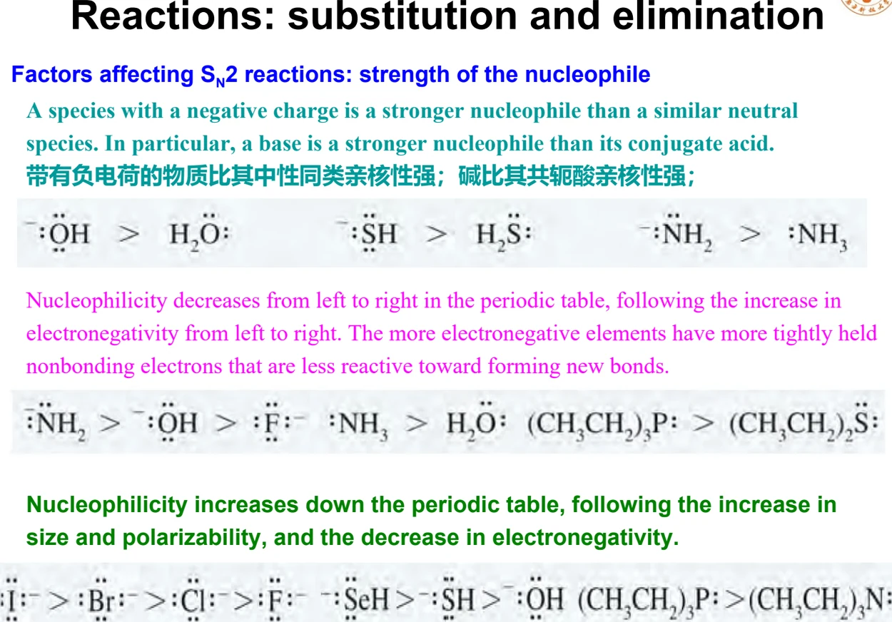
甲醇（CH3OH）与甲氧基负离子（CH3O−）有相同的孤对电子、相同的氧原子，氧上都有未共享电子对。差别只在带不带负电荷，而速率差了约一百万倍。这排除了“电子对数目”这类解释，把原因锁定在负电荷使氧的亲核性大幅增强。更一般地：带负电荷的物种比它的共轭酸亲核性强得多。
15. 亲核性的周期表趋势
课件用三页把亲核性的周期性规律讲完。三条规则各自对应周期表上的一个方向：
沿一个周期从左向右：递减
同周期内从左到右电负性增大，电负性高的原子把孤对电子抓得更紧，这些电子就不那么“愿意”去形成新键。课件给的顺序是：
Across a row
−NH2 > −OH > F−； −NH2 > H2O； (CH3CH2)3P > (CH3CH2)2S
课件原文：Nucleophilicity decreases from left to right in the periodic table, following the increase in electronegativity from left to right.
沿一个族从上向下：递增
这一条与碱性相反，是本章最重要的一个“例外来源”。核电荷虽然增大，但原子半径增大得更快，电子离核更远、束缚更松、可极化性（polarizability）更高。
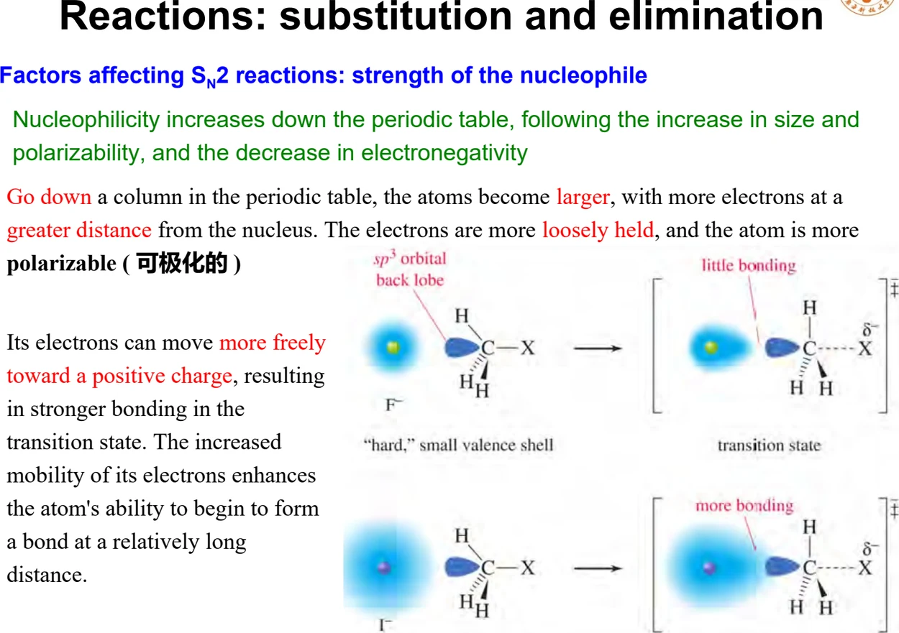
课件给出的两条对照是：−SH > −OH；H2S > H2O；以及 I− > Br− > Cl− > F−。
沿族向下，碱性是递减的（HI 是强酸，所以 I− 是弱碱），而亲核性是递增的（I− 是强亲核试剂）。这一对相反的规律，就是“碱性强 ≠ 亲核性强”最清楚的证据。原因也清楚：碱性看的是与质子的平衡（质子很小，电子云重叠不重要，所以电负性、键能主导），亲核性看的是与碳的速率（碳上有取代基，距离与可极化性变得重要）。
用可极化性解释“向下递增”
课件的解释分三步：原子变大 → 电子离核更远、束缚更松 → 电子能更自由地向正电荷移动。结果是过渡态中形成了更强的键；而且电子在较远的距离上就能开始成键，这对被三个取代基挡住的碳来说尤其有利。
把三条趋势合起来，得到课件那张“按亲核性递减排列”的完整表，它是对本节规律的一次检验——用规则去解释表里的每一格：
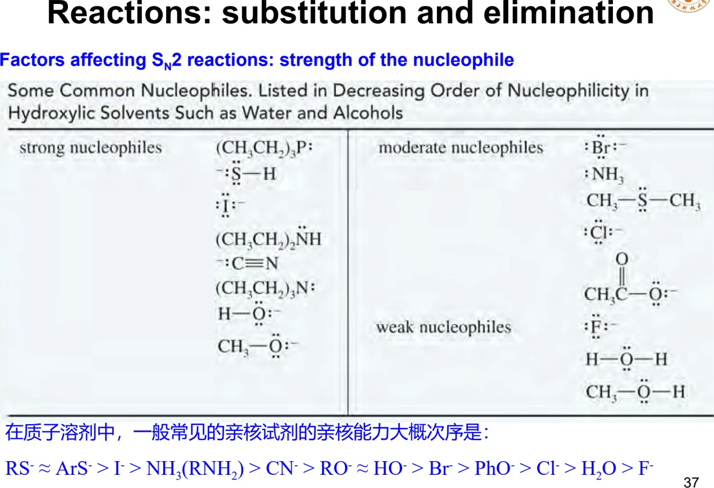
课件的表头是 “Listed in Decreasing Order of Nucleophilicity in Hydroxylic Solvents Such as Water and Alcohols”。换到非质子溶剂里，这组次序会变（氟离子会上升到氟代反应可用的一档）。只记住“I− 强、F− 弱”而忘了溶剂前提，后面遇到用 DMSO 或乙腈的题目就会判断错。
16. 位阻与溶剂：两类“反常”
位阻效应：碱性强而亲核性弱
要作亲核试剂，离子或分子必须靠到碳原子上才能进攻。亲核试剂上的大基团会挡住这个接近路径，从而降低反应速率。
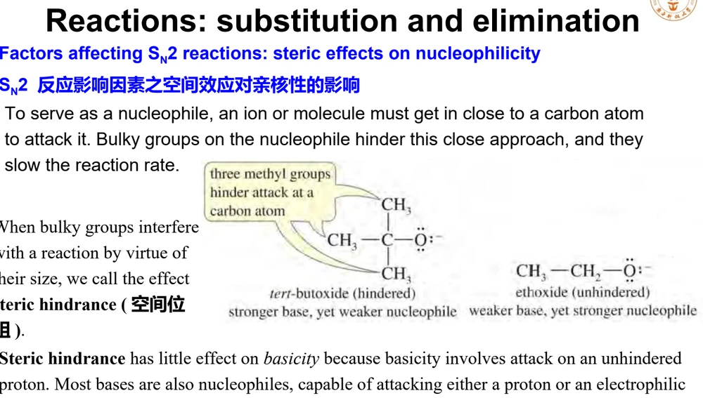
课件的推理链条是：位阻对碱性的影响很小，因为碱性进攻的是一个没有位阻的质子。大多数碱同时也是亲核试剂，能进攻质子或亲电碳，但这两条路受位阻的影响完全不同。于是得到一条实用的合成规则：
想让它当碱 → 用大位阻试剂
- 例：叔丁氧基负离子（tert-butoxide）。
- 结果是消除（E2）占优，而不是取代。
想让它当亲核试剂 → 用位阻小的试剂
- 例：乙氧基负离子（ethoxide）。
- 结果是取代（SN2）占优。
溶剂效应：质子溶剂 vs 非质子溶剂
课件用两页讲溶剂。定义先要分清：
- 质子溶剂（protic solvent）：含酸性氢，通常以 O–H 或 N–H 的形式存在。这类溶剂能与带负电荷的亲核试剂形成氢键，把阴离子稳定下来。
- 非质子溶剂（aprotic solvent）：不含 O–H 或 N–H 基团。极性非质子溶剂（polar aprotic solvent）有强偶极矩以保证溶解性，却没有 O–H 或 N–H 与阴离子形成氢键。
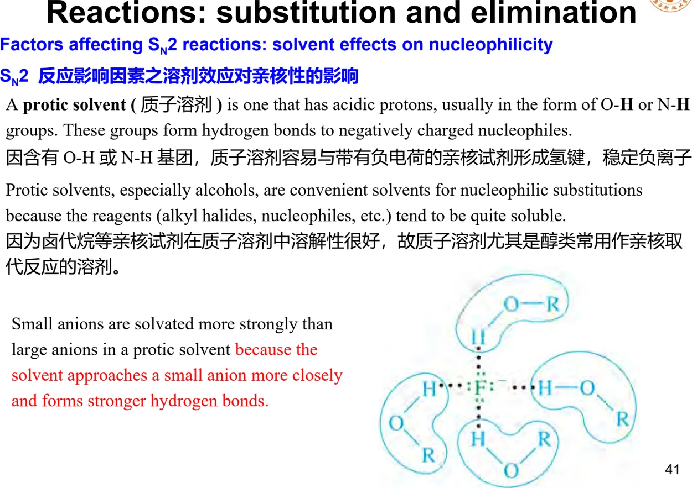
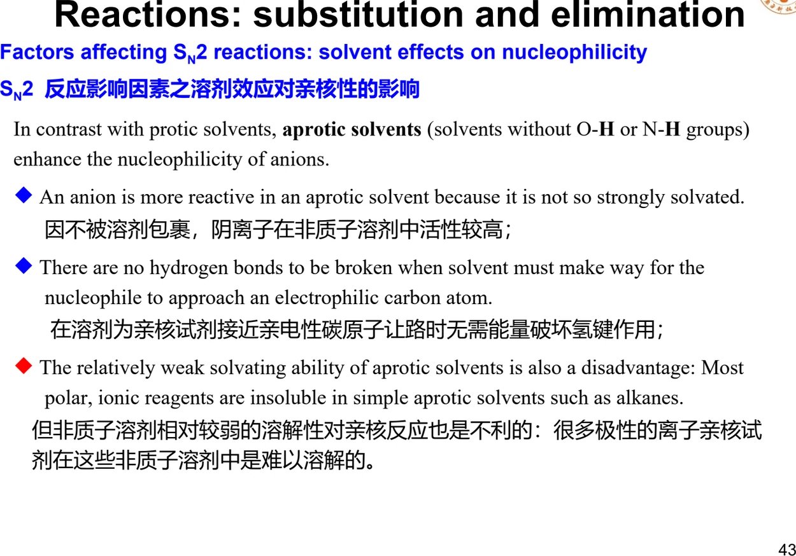
课件给的三条结论：
- 阴离子在非质子溶剂中活性较高，因为它没有被溶剂包裹（溶剂化）得那么强。
- 溶剂为亲核试剂接近亲电碳原子“让路”时，无需破坏氢键——省下了一部分能量。
- 非质子溶剂的弱溶剂化能力也是缺点：很多极性的离子型亲核试剂在简单的非质子溶剂（如烷烃）中难以溶解。
课件还比较了大小阴离子的差别：在质子溶剂中，小阴离子被溶剂化得更强，因为溶剂能更贴近小阴离子、形成更强的氢键；而碘离子这样的大阴离子溶剂化较弱、因而更活泼。
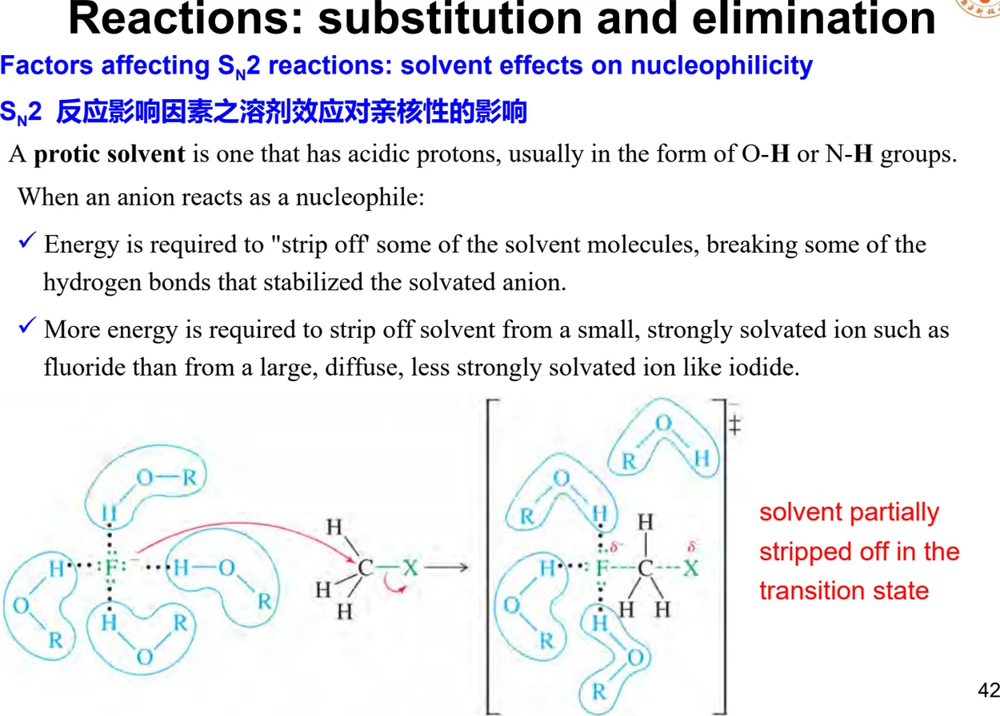
冠醚：同时解决溶解性与亲核性
课件给出一个漂亮的解决办法：加入能选择性溶剂化阳离子的试剂。典型例子是 18-冠-6，它把 K+ 包在环里，于是阴离子被“拖着”一起进入溶液。
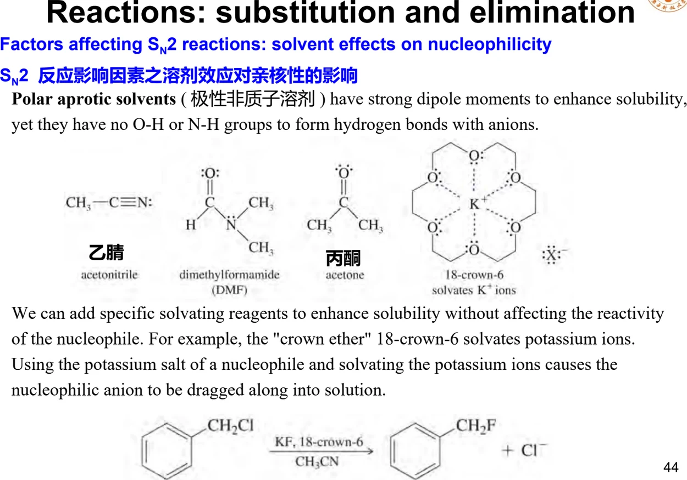
课件的表述是：把亲核试剂的钾盐与能溶剂化 K+ 的冠醚一起使用，会使亲核阴离子被“带”进溶液。这解释了一个看起来矛盾的现象：氟离子在质子溶剂中是弱亲核试剂，但在 18-冠-6 / 非质子溶剂体系里可以顺利把氯换成氟。
判断两个亲核试剂谁更强，按这个顺序问三个问题：① 它们在不在同一个周期/族？（同周期向右递减、同族向下递增）② 有没有位阻差异？（位阻大的当碱、位阻小的当亲核试剂）③ 溶剂是什么？（质子溶剂削弱阴离子，非质子溶剂增强阴离子）三个问题会给出不同方向时，哪一个决定结果取决于具体底物——这正是下一讲要处理的选择性问题。
17. 小结与课件作业
把本讲压缩成一条链：卤代烷的 C–X 键是极性键 → 碳是亲电中心、卤素是离去基团 → 强亲核试剂从背面一步进攻（SN2）→ 速率对两个物种各一级（二级）→ 结果是构型翻转 → 速率快慢由亲核性、底物位阻和溶剂三者决定。
本讲讲到的、必须能默写的内容
| 内容 | 表述 |
|---|---|
| 三类含卤化合物 | 烷基卤（sp3）、乙烯基卤与芳基卤（sp2） |
| 四类卤代烷 | 甲基卤、伯（1°）、仲（2°）、叔（3°） |
| 卤素电负性 | I < Br < Cl < F（2.7 < 3.0 < 3.2 < 4.0） |
| 键长顺序 | C–F 1.38 Å < C–Cl 1.78 Å < C–Br 1.94 Å < C–I 2.14 Å |
| SN2 速率方程 | rate = k[R–X][Nu]，对每个反应物一级、总二级 |
| 底物反应性顺序 | CH3X > 1° > 2°（3° 不能按 SN2 反应） |
| 立体化学结果 | 背面进攻 → 构型翻转 |
| 亲核性趋势 | 同周期向右递减、同族向下递增 |
| 位阻的反常 | 叔丁氧基：强碱、弱亲核试剂；乙氧基：弱碱、强亲核试剂 |
课件留的作业
课件最后一页给了两道题，只给题目不给答案：
Show how you might use SN2 reactions to convert 1-chlorobutane into the following compounds: (a) 1-butanol；(b) 1-fluorobutane；(c) CH3–(CH2)3–CN；(d) 1-butanamine（写作 CH3(CH2)3NH2）；(e) CH3CH2CH2CH2OCH3；(f) CH3CH2CH2CH2–O–(CH2)3CH3。
答案要点全部在第 12、13 节的例子里：(a) NaOH 水溶液；(b) KF / 18-冠-6 / CH3CN；(c) NaCN；(d) 过量 NH3；(e) NaOCH3；(f) 先用 (a) 得 1-丁醇，再与 NaH 生成丁氧基负离子，再与 1-氯丁烷反应。注意 (f) 不能一步完成。
For each pair, predict the stronger nucleophile in the SN2 reaction (using an alcohol as the solvent). Explain your prediction: (a) (CH3)3N 或 (CH3)2NH；(b) NH3 或 PH3；(c) (CH3)3N 或 (CH3)2O；(d) (CH3)3CHO− 或 CH3CH2CH2O−。
判断依据依次是第 15 节（同周期/同族趋势）与第 16 节（位阻）。溶剂定为醇，说明要用质子溶剂下的次序。课件未给答案，本笔记不代答，请按三步骤自行判断后与本讲复习清单第 17–21 题对照。
本讲未展开、留给下一讲的内容
课件第 2 页的提纲里还有三项本讲没有覆盖：卤代烷的用途（common use of alkyl halides）、卤代烷的制备（preparation of alkyl halides），以及提纲中与取代并列的消除反应（elimination）的完整机理。SN1、E1、E2 以及“什么时候取代占优、什么时候消除占优”的判断表，都留到 Chapter 6-2。
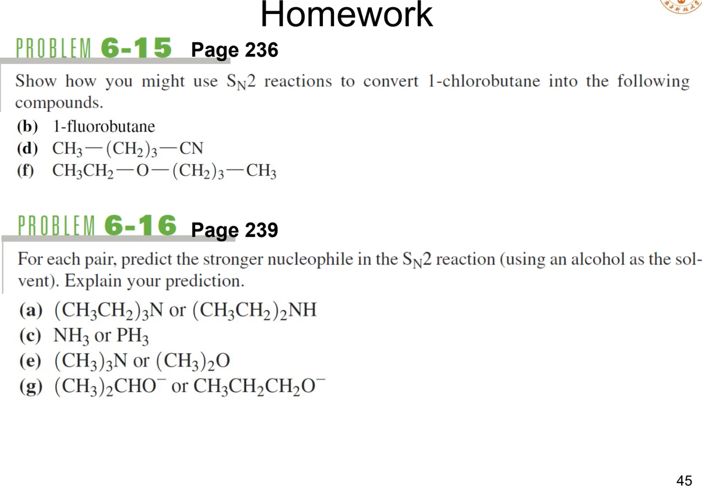
18. 卤代烷的物理常数选表
课件在第 18、20 页各给了一张完整的数据表。把两张表里最有用的部分并到这里，便于查用。
沸点
| 化合物 | 分子量 | 沸点 / ℃ |
|---|---|---|
| CH3–F | 34 | −78 |
| CH3–Cl | 50.5 | −24 |
| CH3–Br | 95 | 4 |
| CH3CH2–Cl | 64.5 | 12 |
| CH3CH2–Br | 109 | 38 |
| CH3CH2–I | 156 | 72 |
| 正丁基溴 n-butyl bromide | 137 | 102 |
| 叔丁基溴 tert-butyl bromide | 137 | 73 |
同分异构体的分子量相同，沸点却差了 29 ℃——差别只来自支链化减少了接触面积。这一对数据比整张表更能说明问题。
密度
| 化合物 | 分子量 | 密度 / (g·mL−1) |
|---|---|---|
| CH3–Cl | 50.5 | 0.92 |
| CH3–Br | 95 | 1.68 |
| CH3–I | 142 | 2.28 |
| CH2Cl2 | 85 | 1.34 |
| CHCl3 | 119 | 1.50 |
| CCl4 | 154 | 1.60 |
| CH3CH2–Cl | 64.5 | 0.90 |
| CH3CH2–Br | 109 | 1.46 |
| CH3CH2–I | 156 | 1.94 |
从这张表可以直接读出第 7 节的四条结论：一氯代烷 < 1；一溴、一碘代烷 > 1；同一烃基时碘烷最大、氟烷最小；多氯代烷（CH2Cl2、CHCl3、CCl4）都大于 1。
19. 从本讲出发的三个追问
课件没有明说，但把本讲的材料读完之后，自然会浮出三个问题。它们正好是后续内容的入口。
如果底物是叔卤代烷呢？
- SN2 走不通——三点取代基把背面完全堵死。
- 但叔卤代烷在实验中明明会反应，而且反应还不慢。
- 说明一定有另一条机理：先电离出碳正离子，再被亲核试剂捕获。这就是 SN1，下一讲的主题。
如果亲核试剂同时是强碱呢？
- 第 8 节已经指出取代与消除互相竞争。
- 第 16 节又指出：位阻大的碱（叔丁氧基）偏向消除，位阻小的偏向取代。
- 于是产生一张“底物 × 试剂 × 条件”的选择表，需要 E1、E2 两个机理才填得满。
烯丙基与苄基卤为什么特别活泼？
- 课件第 31 页的六个例子里，苄基氯是唯一的苄卤。
- 它的 SN2 速率远高于相应的一级烷基卤。
- 原因是过渡态可以被相邻的 π 体系稳定——这需要用到第 2 讲的共轭与分子轨道。
20. 本讲与前面几讲的接口
这一讲把前几讲的概念几乎全用了一遍，理清它们在何处出现，复习时就不必来回翻页。
| 前面讲过 | 在本讲出现的位置 | 用法 |
|---|---|---|
| 第 2 讲 · 电负性与键极性 | 第 6 节 C–X 键 | 电负性差 → 碳带 δ+ → 碳是亲电中心 |
| 第 2 讲 · 分子轨道 | 第 9 节过渡态 | 亲核试剂孤对从背面进攻 σ* 反键轨道 |
| 第 4 讲 · 伯仲叔与支链化 | 第 3、7 节 | 按连卤碳分级；支链化降低沸点 |
| 第 5 讲 · 构象与位阻 | 第 16 节位阻效应 | 用位阻解释叔丁氧基的碱性/亲核性分裂 |
| 第 6 讲 · 反应能量图 | 第 9、10 节 | 单峰即过渡态；k 与过渡态能量相关 |
| 第 6 讲 · 速率方程 | 第 10、11 节 | 二级动力学的写法与二级速率常数的单位 |
| 第 5-1 讲 · CIP 顺序规则 | 第 5 节命名 | 中文名的取代基排列依据 |
| 第 5-1 讲 · 手性与对映体 | 第 9 节构型翻转 | SN2 的手性碳产物是对映体 |
复习时不必重读前面的笔记：只要这张表里的每一行都能自己讲出“为什么在这里用得上”，本讲与前几讲就已经连成一条线了。特别是最后两行——命名与立体化学在本章不是背景知识，而是直接用来判断产物与写名字的工具。
21. 教材对照：本讲在 Wade 第 6 章中的位置
| 本讲小节 | Wade 8th ed. | 要点 |
|---|---|---|
| 2–3 分类与命名 | §6-1 | 按连卤碳的级数分伯/仲/叔；卤素作取代基，卤代烷看作取代烷烃 |
| 4 顺序规则的应用 | §6-1（并见 §5-2） | 英文名按字母序、中文名按 CIP 顺序；di-、tri- 等前缀不参与排序 |
| 5 C–X 键的结构 | §6-2 | 电负性差造成极性键；键长与键能随卤素增大而下降 |
| 6–7 物理性质 | §6-3 | 色散力主导沸点；支链化降低沸点；密度与溶解性的规律 |
| 8–9 取代与消除 | §6-4 | 两类反应的定义与竞争关系；脱卤化氢给出烯烃 |
| 10–13 SN2 机理与动力学 | §6-5、§6-6 | 协同一步、过渡态而非中间体、背面进攻、rate = k[R–X][Nu] |
| 14–16 亲核性 | §6-7 | 碱性与亲核性的定义差别；周期表趋势；位阻与溶剂效应 |
| 17 小结与作业 | §6-5–§6-7 | Problem 6-15、6-16；最后一节列出本讲未展开的内容 |
22. 本课复习清单
- 烷基卤、乙烯基卤、芳基卤三者在结构上的区别是什么？各自卤素连在什么杂化的碳上？
- 卤代烷按“连有卤素的碳”分为哪四类？仲丁基碘（sec-butyl iodide）属于哪一类？
- “偕二卤代烷”与“邻二卤代烷”分别指什么？
- 写出 IUPAC 名称的四段结构：Prefix–Locant–Parent–Suffix，每一段回答什么问题？
- 卤素作为取代基时，它的优先次序排在哪些官能团之后？
- 2-溴丙烷的英文名为什么不写成 2-bromopropane 之外的形式？“isobutyl”中的 iso 在英文排序里算不算字母？
- C–X 键为什么是极性键？偶极矩随卤素怎样变化？为什么这个顺序与电负性顺序不一致？
- 把 C–F、C–Cl、C–Br、C–I 按键长和键能各排一次序。两者是同一方向还是相反方向？
- 卤代烷的沸点主要由哪一类分子间作用力决定？为什么支链化的 tert-butyl bromide 沸点低于正丁基溴？
- 为什么一氯代烷的相对密度小于 1，而一溴代烷、一碘代烷大于 1？
- 取代反应与消除反应的定义分别是什么？为什么说两者经常互相竞争？
- 脱卤化氢（dehydrohalogenation）生成什么？需要什么条件？
- SN2 的“2”指的是什么？为什么说它是一个协同反应？
- SN2 过程中为什么得到的是过渡态而不是中间体？这与你上一讲学过的碳正离子中间体有什么本质区别？
- 写出 SN2 的速率方程，并说明为什么它支持“一步协同”的机理。
- SN2 中亲核试剂从哪一面进攻？这会造成什么立体化学结果？
- SN2 的底物反应性顺序是什么？为什么叔卤代烷不能按此机理反应？
- 碱性与亲核性的定义分别是什么？为什么说“强碱不一定是强亲核试剂”？
- 总结亲核性沿周期表“向右递减、向下递增”的原因。
- 为什么叔丁氧基负离子（tert-butoxide）碱性强而亲核性弱？这一条对合成有什么实用价值？
- 质子溶剂与非质子溶剂分别如何影响阴离子的亲核性？为什么？
- 18-冠-6 在 SN2 反应中起什么作用？为什么能同时解决“溶解性”和“亲核性”两个问题？
23. 课件勘误与提示
- 课件第 3 页有一段明显排版错位：“the alkyl halides (烷基卤), the vinyl halides (乙烯基卤), and the aryl halides (芳基卤)”一句与下面“alkyl halide: a halogen atom bonded to one of the sp3 hybrid carbon atoms…”一句在版面上互相重叠。本笔记按语义把它们拆开：先给出三类化合物的并列，再分别给出三者的定义。原文中“an alkyl group”一词在课件里被压掉，本笔记补全。
- 课件第 4 页的中文“一级卤代烃 / 代烃”是原件的换行断字（“一级卤代烃”被折成两行），不是术语，也不是笔误，本笔记统一写作“一级（伯）卤代烃”。
- 课件第 4 页把 tertiary halide 的中文写作“叔卤”，但同一页下方又写作“三级卤”，第 3 章起的前几讲也用“叔/仲/伯”。本笔记采用“伯（1°）/仲（2°）/叔（3°）”，并在需要时并列“一级/二级/三级”，两者指同一件事。
- 课件第 5 页的“邻二卤代烷或连二卤代烷”是两个并列的译名，本笔记统一用“邻二卤代烷”，并把“偕/邻”与英文 geminal/vicinal 对齐。
- 课件第 6 页的官能团优先次序表在页脚被截断，最后一项“-X（卤素）”之后还有“-NO2 硝基 > -NO 亚硝基 > -H 烷烃”。本笔记按通用次序补齐，使用前建议核对课件原件或 Wade 附录。
- 课件第 8 页的 CIP 顺序规则与第 5-1 讲内容重复。本笔记保留它，是因为英文命名里的字母序与中文命名的 CIP 序恰恰相反，这一对反差是本章最容易混淆的地方，值得在此处再出现一次。
- 课件第 14 页的偶极矩数值需要谨慎阅读。课件正文先写“电负性 I < Br < Cl < F”（正确），随后表格里偶极矩却是 C–I 1.29 D < C–Br 1.48 D < C–F 1.51 D < C–Cl 1.56 D，氯代物的偶极矩反而最大——这一处在正文中没有解释。原因在于分子偶极矩是键偶极与孤对电子贡献的矢量和，氯的孤对贡献与碳–卤键偶极的夹角关系使得 C–Cl 的合偶极矩略大于 C–F；也就是说，偶极矩的大小并不与电负性差单调对应。本笔记在第 5 节把这个区别单独写出来，不要把偶极矩顺序当成电负性顺序的推论。
- 课件第 23 页的过渡态结构在图中未标出氧上的负电荷，只画了 δ−。严格地说 SN2 过渡态上亲核试剂一侧带部分负电荷、离去基团一侧也带部分负电荷，总电荷为 −1。本笔记在正文中按“部分成键、部分断键”的方式描述，不依赖图中的电荷标注。
- 课件第 26 页底部的轨道相互作用示意图用的是彩色等值面，颜色在这种分辨率下不易分辨相位。本笔记在正文中用文字说明“亲核试剂的孤对轨道从背面与 σ* 反键轨道作用”，读图时不必依赖颜色。
- 课件第 28、29 页是同一道速率计算题的两种解法（先比浓度、再代速率常数）。课件把它们分成两页，本笔记合并成一节并保留两种解法，因为第一种是“定性比较”、第二种是“定量计算”，考场上用哪一种取决于题目给的数据。
- 课件第 31 页的例子里有一处反应写成 “benzylic chloride + hydroxide → benzyl alcohol + Cl−”，但漏写了氢氧根上的负电荷在产物中的去向。这条反应同时涉及苄卤的 SN2；本笔记列出该页例子时按完整的离子方程式写。
- 课件第 34 页提到“甲醇与甲氧基负离子相比，甲氧基负离子的反应速率快约一百万倍”。课件页面上这个倍数以“1 million times faster”的文字给出，量级可以作为记忆点，但如果要引用具体数值，建议以 Wade 正文为准。
- 课件第 37 页的亲核性顺序表是“在质子溶剂中”的次序，课件在表头写明了这一点。同一组物种在非质子溶剂中的次序会变（第 15、16 节）。引用这张表时必须连同“质子溶剂”这个前提一起引用，否则会得出矛盾结论。
- 课件第 45 页的作业只给题目不给答案：Problem 6-15 要求给出 1-氯丁烷合成四种指定产物的 SN2 路线，Problem 6-16 要求判断七组物种中哪一个亲核性更强（溶剂为醇）。本笔记在第 17 节给出 6-15 的四条路线，6-16 的七组判断则作为练习保留，判断依据见第 14–16 节。
本次测验的概念校正：SN2使反应中心发生几何构型翻转；取代后CIP优先次序可能改变，因此不能保证R/S标签一定改变。底物与更换了基团的产物通常是不同化合物，不能一概称为对映体。
章节测验
15道单选、3道多选、2道判断、2道填空。按5道基础、10道中等、4道较难、3道拓展递进；交卷后查看答案与解析。